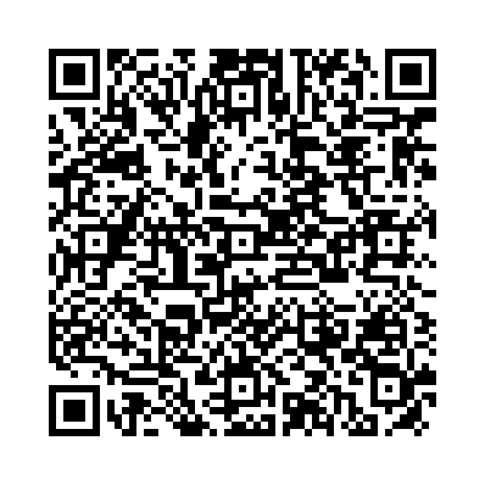

助動詞 Must は、「～しなければならない」という義務や必要性、または「～に違違いがない」という推測を表します。
例文：
以下の単語を並び替えて正しい文を作成しましょう。（和訳を参考にしてください）

問題1: (must / I / study / English / every day) - 私は毎日英語を勉強しなければなりません。
解答: I must study English every day.
解説: 「must + 動詞の原形」で義務を表します。
問題2: (the meeting / she / today / must / attend / ?) - 彼女は今日その会議に出席しなければなりませんか？
解答: Must she attend the meeting today.
解説: 疑問文では「Must」を主語の前に置きます。
問題3: (this phone / must not / use / you / without permission) - あなたは許可なしにこの電話を使ってはいけません。
解答: You must not use this phone without permission.
解説: 否定文では「must not」を使い禁止を表します。
問題4: (must / we / leave / early / tomorrow) - 私たちは明日早く出発しなければなりません。
解答: We must leave early tomorrow.
解説: 肯定文では「must + 動詞の原形」を使います。
問題5: (here / you / follow / must / the rules / ?) - あなたはここで規則に従わなければなりませんか？
解答: Must you follow the rules here?
解説: 疑問文では「Must」を主語の前に置きます。